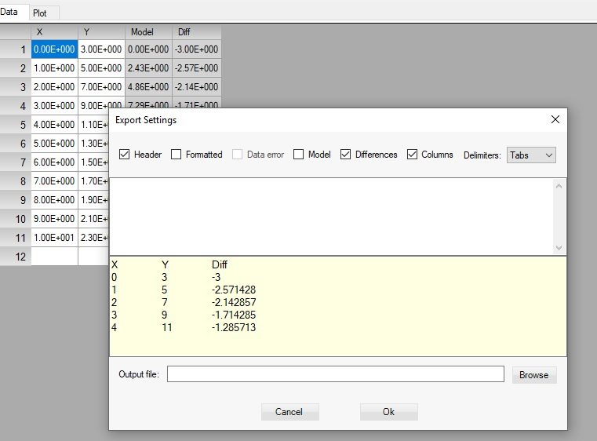
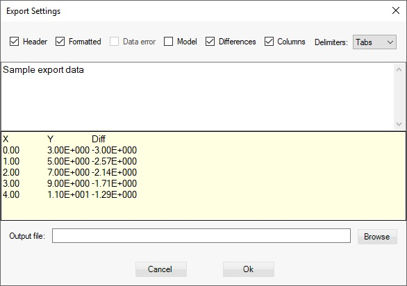

Export Data to clipboard
Data can be exported/copied to the clipboard, which includes and column names. For this choose Data > Export to clipboard from the menu or click on the copy all data to clipboard button
You can also use Ctrl+B keys.
Export Data to file
To export data to a file choose File > Export to ASCII from the menu or click on the export data to ASCII file button:
You can also use Ctrl+E keys. The export data dialog opens:

You can select to provide and include header lines, include column names, choice of delimiters and formatting.

The format which is applied is the one specified in the data table. Provide the name and path of the file and click Ok button.